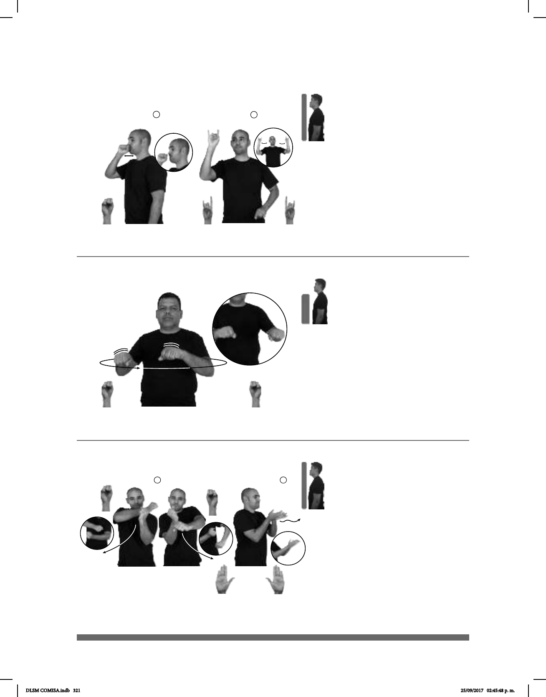

321
Seña: SC: I.SB; II. SS
I.MD y MB S.1; II. B-P.2
I. MD oblicua hacia la izquierda,
MB oblicua hacia la derecha; II. Palmas hacia
arriba.
I. Del pecho a la cintura; II. A la
altura del pecho. MD junto a MB.
I. MD y MB se mueven
formando arcos hacia abajo de un lado a otro;
II. Las manos siguen una trayectoria ondulada
hacia el frente.
Simula la acción de remar y el
sust. m. sing. Actividad deportiva y
recreativa que consiste en recorrer el cauce de
ríos en la dirección de la corriente (río abajo)
por lo general sobre algún tipo de embarcación
o balsa.
Seña: SC: I. SM; II. SB
I. MD S.1; II. 1.l.1
I. Palma hacia la
izquierda; II. MD y MB palmas hacia
afuera.
I. A la altura de la boca; II.
MD y MB a la altura de la cabeza.
I. Recto de atrás
hacia adelante repetidamente; II. MD
recto hacia la derecha, MB recto hacia
la izquierda.
Representación: Simula colocar
anuncios publicitarios o de campaña.
1. sust. f. Circunstancia de
ser o de hacerse algo del conocimiento
público. 2. sust. f. Conjunto de medios
y procedimientos empleados para dar a
conocer algo generalmente para llamar
la atención del público hacia ello o para
fomentar la adquisición.
(S-82)
1
2
HOMBRE GOBERNADOR PUBLICIDAD COLOCAR++ CALLES
El gobernador colocó mucha publicidad por las calles.
Seña: SB
MD y MB S.1
MD y MB palmas hacia
abajo.
MD y MB a la altura del
pecho.
Los brazos de MD y MB
se mueven formando un círculo hacia el
frente simultáneamente.
Simula la acción de
pulir el piso.
sust. f. Instrumento con el
que se alisa y se lustre algo.
(S-83)
pro-ELLOS TRABAJAR USAR-PULIDORA PARA PISO
Ellos trabajan con pulidora de piso.
(S-84) Rafting
JOVEN HOMBRE DEPORTE
izquierda
RAFTING
El deportista de rafting es joven.
DLSM COMISA.indb 321 25/09/2017 02:45:48 p. m.